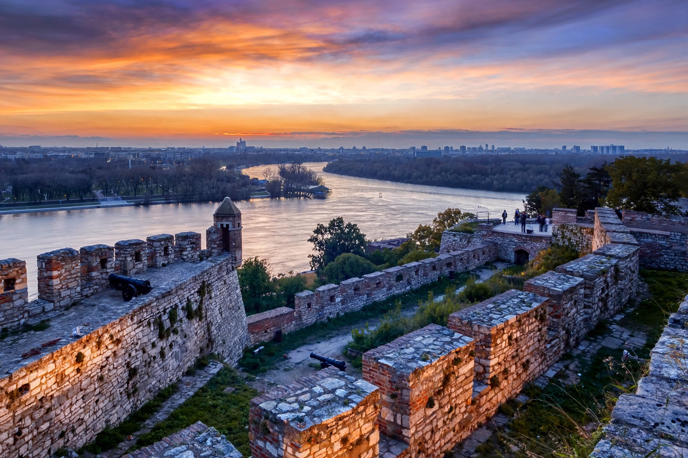

Belgrade Fortress
The Belgrade Fortress (Serbian: Beogradska tvrđava) is a historic fortification complex in Belgrade, Serbia, standing on a 125-metre ridge above the confluence of the River Sava and the Danube. It consists of the old citadel (Upper and Lower Town) and Kalemegdan Park, and represents the whole historical core of the city: because Belgrade — successively a Roman, Byzantine, Bulgarian, Hungarian, Serbian and Ottoman stronghold — was so often fought over, destroyed and rebuilt, the fortress preserves layers of two millennia of military architecture. It was declared a Monument of Culture of Exceptional Importance in 1979.
 | |
| Location | Stari Grad, Belgrade, Serbia |
|---|---|
| Coordinates | 44.82° N, 20.45° E |
| Built | Origins 3rd century BC (Singidunum); repeatedly rebuilt to the 18th century |
| Materials | Stone, brick |
| Open to public | Yes |
History
The Celtic tribe of the Scordisci founded Singidunum on the ridge in the 3rd century BC; the Romans stationed Legio IV Flavia there on the Danube limes. The Slavic city of Alba Bulgarica / Belgrade ("White City") grew around the Byzantine castle. Despot Stefan Lazarević made Belgrade the capital of the Serbian Despotate in the early 15th century and rebuilt it into a major fortified capital with a despot's palace.
The Ottoman Sultan Suleiman the Magnificent captured Belgrade in 1521, and the fortress became a key Ottoman stronghold facing Habsburg Hungary; the Austrians took and rebuilt it three times (1688, 1717 — when the great Vauban-style works under Prince Eugene of Savoy were begun — and 1739), alternating with Ottoman rule until Prince Mihailo Obrenović received the keys in 1867. By then militarily obsolete, the fortress grounds were transformed into Kalemegdan Park, while the Lower Town retained barracks and military use into the 20th century.
The complex today
The Upper Town plateau holds the Victor monument (Pobednik, 1928), Belgrade's emblem, the Military Museum, the Roman Well (in fact an 18th-century Austrian cistern), the clock tower (Sahat kula) and the tomb of Damad Ali Pasha. The Lower Town contains the Nebojša Tower — now a museum — medieval gates, the Planetarium in an old Turkish bath, and Belgrade Zoo along the walls. The fortress and park form the city's principal archaeological site and promenade, with views over New Belgrade and the two rivers.
See also
Categories: Fortresses in Belgrade · Cultural Monuments of Exceptional Importance (Serbia)